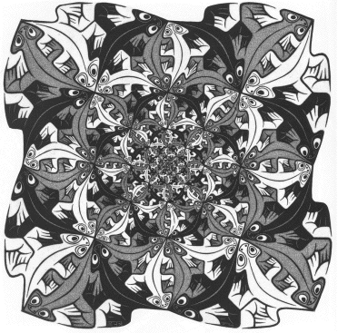
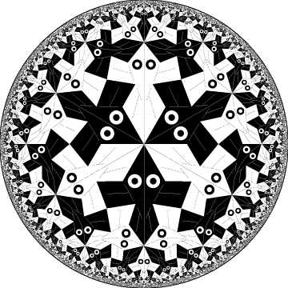

| In a quest to represent the infinite by tiling a region with similar but smaller copies of a figure, |
|  |
| Escher's print Smaller and Smaller |
| Escher was inspired by Coxeter to produce his Circle Limit prints. |
| In these prints, circles are tessellated by similar (not in Euclidean geometry) figures that decrease in size but increase in number as they approach the circle. |
|  |
| Escher's print Circle Limit I |
| It may seem that this process should generate a fractal, but the limit set is the bounding circle, a completely Euclidean shape. |
| Peter Radeschelers and Robert Fathauer have made prints in a way mimicking Escher's approach, but with fractal perimeters. |
Return to Tilings with Fractal Perimeters.